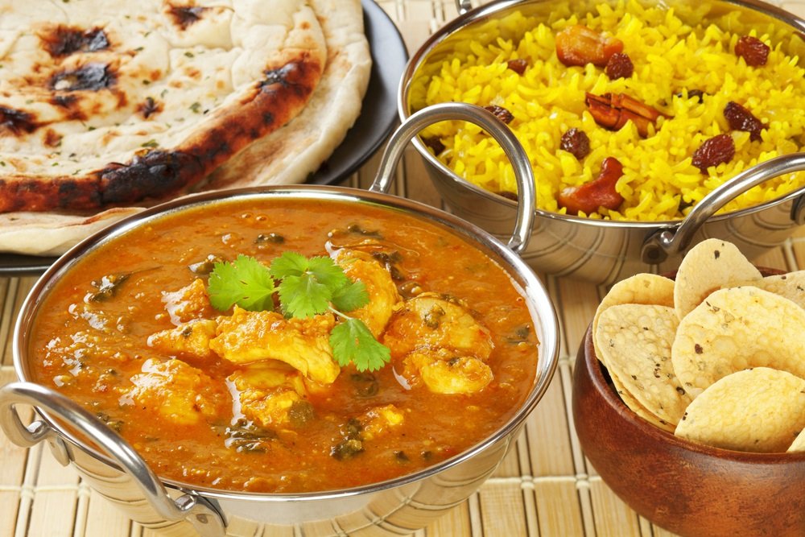
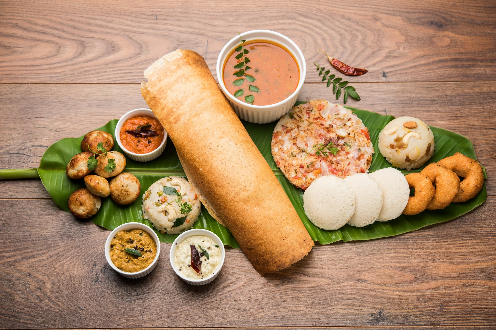

"Indian Food"
List
- Chicken Biryani
- Veg Food
- South Indian Food
Indian food is a diverse and rich cuisine that varies by region, culture, and religion. Indian food is known for its wonderful use of herbs and spices, such as the five essential spices of panchphoron. Indian food includes a variety of deep-fried snacks, pastries, curries, gravies, sauces, rice dishes, tandoor-cooked meats, vegetable dishes, chutneys, breads, and sweets. Some of the popular regional cuisines are Bengali, Gujarati, Kashmiri, Mughlai, Punjabi, and Rajasthani.
Originally invented in the 1600’s, Biryani was created to provide nourishment to soldiers in Indian army barracks. Combining meat, and rice supplied the soldiers with a quick nutritional protein fix.

The South Indian cuisine is famous for the use of lentils and spices, green chillies, fresh coconut and dominated by native vegetables and fruits. South Indian food has earned much fame across the globe, particularly for scrumptious dishes like Dosa, Vada, Idli, Uttapam and Sambar.
